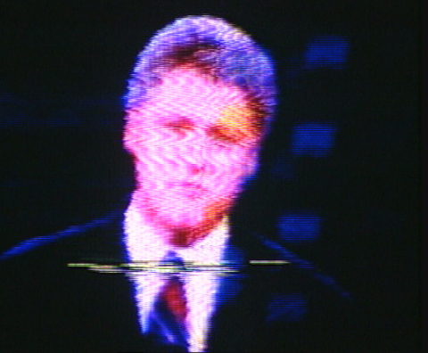

Name Name

Wie sich der american way of life in den Medien des Landes fokussiert, interessiert den Kieler Künstler Kai Zimmer. Eine Serie von Arbeiten der 90er Jahre macht dies bereits in den Titeln offenbar. Analog zu ihrer Länge heißen die Videos schlicht ONE MINUTE IN AMERICA (1993), TWO MINUTES IN AMERICA (1996) und so fort. Ersteres reflektiert die ”one minute“ auch inhaltlich, indem Moderatoren an einer Talkrunde teil- nehmende Präsidentschaftskandidaten auf das nahe Ende ihrer Redezeit hinweisen. Die rasende Rhythmisierung des Geschehens realisiert Kai Zimmer ebenso mit dem Found-Footage-Material der zweiten Arbeit, in der Versatzstücke physischer Gewalt durch Wiederholung ad absurdum geführt werden. Als Motto für das rohe Geschehen zitiert der Künstler Clint Eastwood: ”Right now, I don't feel too agreable.“